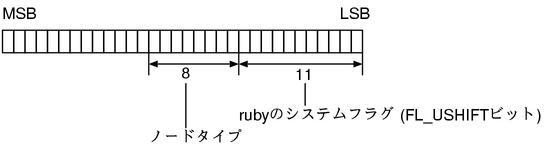
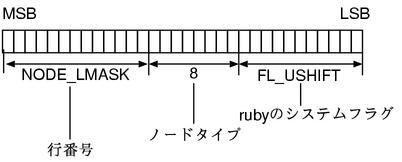
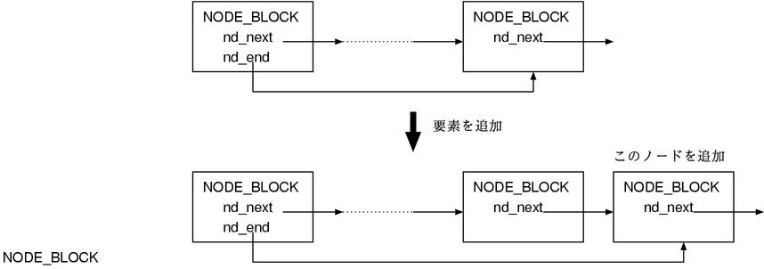
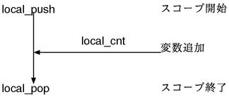
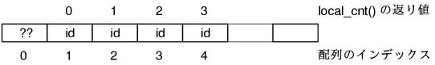
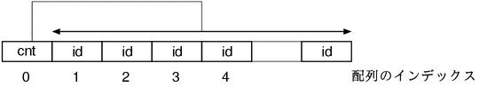
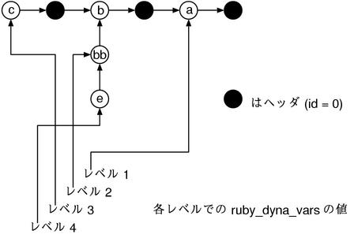

Ruby Hacking Guide
Chapter 12: Syntax tree construction
Node
NODE
As I’ve already described, a Ruby program is first converted to a syntax tree.
To be more precise, a syntax tree is a tree structure made of structs called “nodes”.
In ruby , all nodes are of type NODE .
▼ NODE
128 typedef struct RNode {
129 unsigned long flags;
130 char *nd_file;
131 union {
132 struct RNode *node;
133 ID id;
134 VALUE value;
135 VALUE (*cfunc)(ANYARGS);
136 ID *tbl;
137 } u1;
138 union {
139 struct RNode *node;
140 ID id;
141 int argc;
142 VALUE value;
143 } u2;
144 union {
145 struct RNode *node;
146 ID id;
147 long state;
148 struct global_entry *entry;
149 long cnt;
150 VALUE value;
151 } u3;
152 } NODE;
(node.h)
Although you might be able to infer from the struct name RNode , nodes are Ruby objects.
This means the creation and release of nodes are taken care of by the ruby ’s garbage collector.
Therefore, flags naturally has the same role as basic.flags of the object struct.
It means that T_NODE which is the type of a struct and flags such as FL_FREEZE are stored in it.
As for NODE , in addition to these, its node type is stored in flags .
What does it mean? Since a program could contain various elements
such as if and while and def and so on, there are also various corresponding node types.
The three available union are complicated,
but how these unions are used is decided to only one specific way for each node.
For example, the below table shows the case when it is NODE_IF that is the node of if .
| member | union member | role |
|---|---|---|
u1 |
u1.node |
the condition expression |
u2 |
u2.node |
the body of true |
u3 |
u3.node |
the body of false |
And, in node.h , the macros to access each union member are available.
▼ the macros to access NODE
166 #define nd_head u1.node
167 #define nd_alen u2.argc
168 #define nd_next u3.node
169
170 #define nd_cond u1.node
171 #define nd_body u2.node
172 #define nd_else u3.node
173
174 #define nd_orig u3.value
：
：
(node.h)
For example, these are used as follows:
NODE *head, *tail; head->nd_next = tail; /* head->u3.node = tail */
In the source code, it’s almost certain that these macros are used.
A very few exceptions are only the two places where creating NODE in parse.y
and where marking NODE in gc.c .
By the way, what is the reason why such macros are used?
For one thing, it might be because it’s cumbersome to remember numbers like u1
that are not meaningful by just themselves.
But what is more important than that is, there should be no problem if the
corresponding number is changed and it’s possible that it will actually be changed.
For example, since a condition clause of if does not have to be stored in u1 ,
someone might want to change it to u2 for some reason. But if u1 is directly used,
he needs to modify a lot of places all over the source codes, it is inconvenient.
Since nodes are all declared as NODE , it’s hard to find nodes that represent if .
By preparing the macros to access, this kind of trouble can be avoided
and conversely we can determine the node types from the macros.
Node Type
I said that in the flags of a NODE struct its node type is stored.
We’ll look at in what form this information is stored.
A node type can be set by nd_set_type() and obtained by nd_type() .
▼ nd_type nd_set_type
156 #define nd_type(n) (((RNODE(n))->flags>>FL_USHIFT)&0xff)
157 #define nd_set_type(n,t) \
158 RNODE(n)->flags = ((RNODE(n)->flags & ~FL_UMASK) \
| (((t)<<FL_USHIFT) & FL_UMASK))
(node.h)
▼ FL_USHIFT FL_UMASK
418 #define FL_USHIFT 11 429 #define FL_UMASK (0xff<<FL_USHIFT) (ruby.h)
It won’t be so much trouble if we’ll keep focus on around nd_type .
Fig.1 shows how it seems like.

Fig.1: How RNode.flags is used
And, since macros cannot be used from debuggers,
the nodetype() function is also available.
▼ nodetype
4247 static enum node_type
4248 nodetype(node) /* for debug */
4249 NODE *node;
4250 {
4251 return (enum node_type)nd_type(node);
4252 }
(parse.y)
File Name and Line Number
The nd_file of a NODE holds (the pointer to) the name of the file where the
text that corresponds to this node exists. Since there’s the file name, we
naturally expect that there’s also the line number, but the corresponding member
could not be found around here. Actually, the line number is being embedded to
flags by the following macro:
▼ nd_line nd_set_line
160 #define NODE_LSHIFT (FL_USHIFT+8)
161 #define NODE_LMASK (((long)1<<(sizeof(NODE*)*CHAR_BIT-NODE_LSHIFT))-1)
162 #define nd_line(n) \
((unsigned int)((RNODE(n)->flags >> NODE_LSHIFT) & NODE_LMASK))
163 #define nd_set_line(n,l) \
164 RNODE(n)->flags = ((RNODE(n)->flags & ~(-1 << NODE_LSHIFT)) \
| (((l)&NODE_LMASK) << NODE_LSHIFT))
(node.h)
nd_set_line() is fairly spectacular.
However, as the names suggest, it is certain that nd_set_line() and nd_line
works symmetrically. Thus, if we first examine the simpler nd_line() and grasp
the relationship between the parameters, there’s no need to analyze nd_set_line()
in the first place.
The first thing is NODE_LSHIFT , as you can guess from the description of the
node types of the previous section, it is the number of used bits in flags .
FL_USHIFT is reserved by system of ruby (11 bits, ruby.h ), 8 bits are for
its node type.
The next thing is NODE_LMASK .
sizeof(NODE*) * CHAR_BIT - NODE_LSHIFT
This is the number of the rest of the bits.
Let’s assume it is restbits . This makes the code a lot simpler.
#define NODE_LMASK (((long)1 << restbits) - 1)
Fig.2 shows what the above code seems to be doing. Note that a borrow occurs
when subtracting 1. We can eventually understand that NODE_LMASK is a sequence
filled with 1 whose size is the number of the bits that are still available.
Fig.2: NODE_LMASK
Now, let’s look at nd_line() again.
(RNODE(n)->flags >> NODE_LSHIFT) & NODE_LMASK
By the right shift, the unused space is shifted to the LSB. The bitwise AND
leaves only the unused space. Fig.3 shows how flags is used. Since FL_USHIFT
is 11, in 32-bit machine 32-(11+8)=13 bits are available for the line number.

Fig.3: How flags are used at NODE
… This means, if the line numbers becomes beyond 2^13=8192, the line numbers should wrongly be displayed. Let’s try.
File.open('overflow.rb', 'w') {|f|
10000.times { f.puts }
f.puts 'raise'
}
With my 686 machine, ruby overflow.rb properly displayed 1809 as a line number.
I’ve succeeded. However, if you use 64-bit machine, you need to create a little
bigger file in order to successfully fail.
rb_node_newnode()
Lastly let’s look at the function rb_node_newnode() that creates a node.
▼ rb_node_newnode()
4228 NODE*
4229 rb_node_newnode(type, a0, a1, a2)
4230 enum node_type type;
4231 NODE *a0, *a1, *a2;
4232 {
4233 NODE *n = (NODE*)rb_newobj();
4234
4235 n->flags |= T_NODE;
4236 nd_set_type(n, type);
4237 nd_set_line(n, ruby_sourceline);
4238 n->nd_file = ruby_sourcefile;
4239
4240 n->u1.node = a0;
4241 n->u2.node = a1;
4242 n->u3.node = a2;
4243
4244 return n;
4245 }
(parse.y)
We’ve seen rb_newobj() in the Chapter 5: Garbage collection. It is the function to get a
vacant RVALUE . By attaching the T_NODE struct-type flag to it,
the initialization as a VALUE will complete.
Of course, it’s possible that some values that are not of type NODE* are
passed for u1 u2 u3, but received as NODE* for the time being.
Since the syntax trees of ruby does not contain double and such,
if the values are received as pointers, it will never be too small in size.
For the rest part, you can forget about the details you’ve learned so far,
and assume NODE is
flagsnodetypend_linend_fileu1u2u3
a struct type that has the above seven members.
Syntax Tree Construction
The role of the parser is to convert the source code that is a byte sequence to a syntax tree. Although the grammar passed, it does not finish even half of the task, so we have to assemble nodes and create a tree. In this section, we’ll look at the construction process of that syntax tree.
YYSTYPE
Essentially this chapter is about actions,
thus YYSTYPE which is the type of $$ or $1 becomes important.
Let’s look at the %union of ruby first.
▼ %union declaration
170 %union {
171 NODE *node;
172 ID id;
173 int num;
174 struct RVarmap *vars;
175 }
(parse.y)
struct RVarmap is a struct used by the evaluator and holds a block local variable.
You can tell the rest. The most used one is of course node .
Landscape with Syntax Trees
I mentioned that looking at the fact first is a theory of code reading. Since what we want to know this time is how the generated syntax tree is, we should start with looking at the answer (the syntax tree).
It’s also nice using debuggers to observe every time,
but you can visualize the syntax tree more handily
by using the tool nodedump contained in the attached CD-ROM,
This tool is originally the NodeDump made by Pragmatic Programmers
and remodeled for this book.
The original version shows quite explanatory output,
but this remodeled version deeply and directly displays the appearance of the
syntax tree.
For example, in order to dump the simple expression m(a) , you can do as follows:
% ruby -rnodedump -e 'm(a)'
NODE_NEWLINE
nd_file = "-e"
nd_nth = 1
nd_next:
NODE_FCALL
nd_mid = 9617 (m)
nd_args:
NODE_ARRAY
nd_alen = 1
nd_head:
NODE_VCALL
nd_mid = 9625 (a)
nd_next = (null)
The -r option is used to specify the library to be load,
and the -e is used to pass a program.
Then, the syntax tree expression of the program will be dumped.
I’ll briefly explain about how to see the content.
NODE_NEWLINE and NODE_FCALL and such are the node types.
What are written at the same indent level of each node are the contents of its node members.
For example, the root is NODE_NEWLINE , and it has the three members:
nd_file nd_nth nd_next. nd_file points to the "-e" string of C,
and ng_nth points to the 1 integer of C, and nd_next holds the next node NODE_CALL .
But since these explanation in text are probably not intuitive,
I recommend you to also check Fig.4 at the same time.
Fig.4: Syntax Tree
I’ll explain the meaning of each node. NODE_CALL is a Function CALL.
NODE_ARRAY is as its name suggests the node of array, and here it expresses
the list of arguments. NODE_VCALL is a Variable or CALL, a reference to
undefined local variable will become this.
Then, what is NODE_NEWLINE ? This is the node to join the name of the currently
executed file and the line number at runtime and is set for each stmt .
Therefore, when only thinking about the meaning of the execution, this node can
be ignored. When you require nodedump-short instead of nodedump ,
distractions like NODE_NEWLINE are left out in the first place. Since it is
easier to see if it is simple, nodedump-short will be used later on except for
when particularly written.
Now, we’ll look at the three type of composing elements in order to grasp how the whole syntax tree is. The first one is the leaves of a syntax tree. Next, we’ll look at expressions that are combinations of that leaves, this means they are branches of a syntax tree. The last one is the list to list up the statements that is the trunk of a syntax tree in other words.
Leaf
First, let’s start with the edges that are the leaves of the syntax tree.
Literals and variable references and so on, among the rules, they are what
belong to primary and are particularly simple even among the primary rules.
% ruby -rnodedump-short -e '1' NODE_LIT nd_lit = 1:Fixnum
1 as a numeric value. There’s not any twist. However, notice that what is
stored in the node is not 1 of C but 1 of Ruby (1 of Fixnum ). This is because …
% ruby -rnodedump-short -e ':sym' NODE_LIT nd_lit = 9617:Symbol
This way, Symbol is represented by the same NODE_LIT when it becomes a syntax tree.
As the above example, VALUE is always stored in nd_lit so it can be handled
completely in the same way whether it is a Symbol or a Fixnum when executing.
In this way, all we need to do when dealing with it are retrieving the value
in nd_lit and returning it. Since we create a syntax tree in order to execute it,
designing it so that it becomes convenient when executing is the right thing to do.
% ruby -rnodedump-short -e '"a"' NODE_STR nd_lit = "a":String
A string. This is also a Ruby string. String literals are copied when actually used.
% ruby -rnodedump -e '[0,1]'
NODE_NEWLINE
nd_file = "-e"
nd_nth = 1
nd_next:
NODE_ARRAY
nd_alen = 2
nd_head:
NODE_LIT
nd_lit = 0:Fixnum
nd_next:
NODE_ARRAY
nd_alen = 1
nd_head:
NODE_LIT
nd_lit = 1:Fixnum
nd_next = (null)
Array. I can’t say this is a leaf, but let’s allow this to be here because it’s
also a literal. It seems like a list of NODE_ARRAY hung with each element node.
The reason why only in this case I didn’t use nodedump-short is …
you will understand after finishing to read this section.
Branch
Next, we’ll focus on “combinations” that are branches.
if will be taken as an example.
if
I feel like if is always used as an example, that’s because its structure is
simple and there’s not any reader who don’t know about if , so it is convenient
for writers.
Anyway, this is an example of if .
For example, let’s convert this code to a syntax tree.
▼The Source Program
if true 'true expr' else 'false expr' end
▼Its syntax tree expression
NODE_IF
nd_cond:
NODE_TRUE
nd_body:
NODE_STR
nd_lit = "true expr":String
nd_else:
NODE_STR
nd_lit = "false expr":String
Here, the previously described nodedump-short is used, so NODE_NEWLINE
disappeared. nd_cond is the condition, nd_body is the body of the true case,
nd_else is the body of the false case.
Then, let’s look at the code to build this.
▼ if rule
1373 | kIF expr_value then
1374 compstmt
1375 if_tail
1376 kEND
1377 {
1378 $$ = NEW_IF(cond($2), $4, $5);
1379 fixpos($$, $2);
1380 }
(parse.y)
It seems that NEW_IF() is the macro to create NODE_IF . Among the values of
the symbols, $2 $4 $5 are used, thus the correspondences between the symbols
of the rule and $n are:
kIF expr_value then compstmt if_tail kEND $1 $2 $3 $4 $5 $6 NEW_IF(expr_value, compstmt, if_tail)
this way. In other words, expr_value is the condition expression, compstmt
( $4 ) is the case of true, if_tail is the case of false.
On the other hand, the macros to create nodes are all named NEW_xxxx , and they
are defined node.h . Let’s look at NEW_IF() .
▼ NEW_IF()
243 #define NEW_IF(c,t,e) rb_node_newnode(NODE_IF,c,t,e) (node.h)
As for the parameters,
it seems that c represents condition, t represents then, and e represents
else respectively. As described at the previous section, the order of
members of a node is not so meaningful, so you don’t need to be careful about
parameter names in this kind of place.
And, the code() which processes the node of the condition expression in the
action is a semantic analysis function. This will be described later.
Additionally, fixpos() corrects the line number. NODE is initialized with
the file name and the line number of the time when it is “created”. However,
for instance, the code of if should already be parsed by end by the time
when creating NODE_IF . Thus, the line number would go wrong if it remains
untouched. Therefore, it needs to be corrected by fixpos() .
fixpos(dest, src)
This way, the line number of the node dest is set to the one of the node src .
As for if , the line number of the condition expression becomes the line number
of the whole if expression.
elsif
Subsequently, let’s look at the rule of if_tail .
▼ if_tail
1543 if_tail : opt_else
1544 | kELSIF expr_value then
1545 compstmt
1546 if_tail
1547 {
1548 $$ = NEW_IF(cond($2), $4, $5);
1549 fixpos($$, $2);
1550 }
1553 opt_else : none
1554 | kELSE compstmt
1555 {
1556 $$ = $2;
1557 }
(parse.y)
First, this rule expresses “a list ends with opt_else after zero or more
number of elsif clauses”. That’s because, if_tail appears again and again
while elsif continues, it disappears when opt_else comes in. We can
understand this by extracting arbitrary times.
if_tail: kELSIF .... if_tail if_tail: kELSIF .... kELSIF .... if_tail if_tail: kELSIF .... kELSIF .... kELSIF .... if_tail if_tail: kELSIF .... kELSIF .... kELSIF .... opt_else if_tail: kELSIF .... kELSIF .... kELSIF .... kELSE compstmt
Next, let’s focus on the actions, surprisingly, elsif uses the same NEW_IF() as if .
It means, the below two programs will lose the difference after they become syntax trees.
if cond1 if cond1
body1 body1
elsif cond2 else
body2 if cond2
elsif cond3 body2
body3 else
else if cond3
body4 body3
end else
body4
end
end
end
Come to think of it, in C language and such, there’s no distinction between
the two also at the syntax level. Thus this might be a matter of course.
Alternatively, the conditional operator ( a?b:c ) becomes indistinguishable
from if statement after they become syntax trees.
The precedences was very meaningful when it was in the context of grammar,
but they become unnecessary any more because the structure of a syntax tree
contains that information. And, the difference in appearance such as if and
the conditional operator become completely meaningless,
its meaning (its behavior) only matters.
Therefore, there’s perfectly no problem if if and the conditional operator
are the same in its syntax tree expression.
I’ll introduce a few more examples. add and && become the same.
or and || are also equal to each other. not and ! , if and modifier if ,
and so on. These pairs also become equal to each other.
Left Recursive and Right Recursive
By the way, the symbol of a list was always written at the left side when expressing a list
in Chapter 9: yacc crash course. However, have you noticed it becomes opposite in if_tail ?
I’ll show only the crucial part again.
if_tail: opt_else
| kELSIF ... if_tail
Surely, it is opposite of the previous examples. if_tail which is the symbol
of a list is at the right side.
In fact, there’s another established way of expressing lists,
list: END_ITEM
| ITEM list
when you write in this way, it becomes the list that contains continuous zero
or more number of ITEM and ends with END_ITEM .
As an expression of a list, whichever is used it does not create a so much difference,
but the way that the actions are executed is fatally different.
With the form that list is written at the right, the actions are sequentially
executed from the last ITEM . We’ve already learned about the behavior of the
stack of when list is at the left,
so let’s try the case that list is at the right.
The input is 4 ITEM s and END_ITEM .
| empty at first | |
ITEM |
shift ITEM |
ITEM ITEM |
shift ITEM |
ITEM ITEM ITEM |
shift ITEM |
ITEM ITEM ITEM ITEM |
shift ITEM |
ITEM ITEM ITEM ITEM END_ITEM |
shift END_ITEM |
ITEM ITEM ITEM ITEM list |
reduce END_ITEM to list |
ITEM ITEM ITEM list |
reduce ITEM list to list |
ITEM ITEM list |
reduce ITEM list to list |
ITEM list |
reduce ITEM list to list |
list |
reduce ITEM list to list |
| accept. |
When list was at the left, shifts and reductions were done in turns.
This time, as you see, there are continuous shifts and continuous reductions.
The reason why if_tail places “list at the right” is to create a syntax tree
from the bottom up. When creating from the bottom up, the node of if will be
left in hand in the end. But if defining if_tail by placing “list at the left”,
in order to eventually leave the node of if in hand, it needs to traverse all
links of the elsif and every time elsif
is found add it to the end. This is cumbersome. And, slow.
Thus, if_tail is constructed in the “list at the right” manner.
Finally, the meaning of the headline is, in grammar terms,
“the left is list " is called left-recursive,
“the right is list " is called right-recursive.
These terms are used mainly when reading papers about processing grammars or
writing a book of yacc .
Trunk
Leaf, branch, and finally, it’s trunk. Let’s look at how the list of statements are joined.
▼The Source Program
7 8 9
The dump of the corresponding syntax tree is shown below.
This is not nodedump-short but in the perfect form.
▼Its Syntax Tree
NODE_BLOCK
nd_head:
NODE_NEWLINE
nd_file = "multistmt"
nd_nth = 1
nd_next:
NODE_LIT
nd_lit = 7:Fixnum
nd_next:
NODE_BLOCK
nd_head:
NODE_NEWLINE
nd_file = "multistmt"
nd_nth = 2
nd_next:
NODE_LIT
nd_lit = 8:Fixnum
nd_next:
NODE_BLOCK
nd_head:
NODE_NEWLINE
nd_file = "multistmt"
nd_nth = 3
nd_next:
NODE_LIT
nd_lit = 9:Fixnum
nd_next = (null)
We can see the list of NODE_BLOCK is created and NODE_NEWLINE are attached
as headers. (Fig.5)
Fig.5: NODE_BLOCK and NODE_NEWLINE
It means, for each statement ( stmt ) NODE_NEWLINE is attached,
and when they are multiple, it will be a list of NODE_BLOCK .
Let’s also see the code.
▼ stmts
354 stmts : none
355 | stmt
356 {
357 $$ = newline_node($1);
358 }
359 | stmts terms stmt
360 {
361 $$ = block_append($1, newline_node($3));
362 }
(parse.y)
newline_node() caps NODE_NEWLINE , block_append() appends it to the list.
It’s straightforward.
Let’s look at the content only of the block_append() .
block_append()
It this function, the error checks are in the very middle and obstructive. Thus I’ll show the code without that part.
▼ block_append() (omitted)
4285 static NODE*
4286 block_append(head, tail)
4287 NODE *head, *tail;
4288 {
4289 NODE *end;
4290
4291 if (tail == 0) return head;
4292 if (head == 0) return tail;
4293
4294 if (nd_type(head) != NODE_BLOCK) {
4295 end = NEW_BLOCK(head);
4296 end->nd_end = end; /*（A-1）*/
4297 fixpos(end, head);
4298 head = end;
4299 }
4300 else {
4301 end = head->nd_end; /*（A-2）*/
4302 }
/* ……omitted…… */
4325 if (nd_type(tail) != NODE_BLOCK) {
4326 tail = NEW_BLOCK(tail);
4327 tail->nd_end = tail;
4328 }
4329 end->nd_next = tail;
4330 head->nd_end = tail->nd_end; /*（A-3）*/
4331 return head;
4332 }
(parse.y)
According to the previous syntax tree dump, NEW_BLOCK was a linked list uses nd_next .
Being aware of it while reading, it can be read “if either head or tail is not NODE_BLOCK ,
wrap it with NODE_BLOCK and join the lists each other.”
Additionally, on (A-1~3), the nd_end of the NODE_BLOCK of the head of the
list always points to the NODE_BLOCK of the tail of the list. This is probably
because in this way we don’t have to traverse all elements when adding an
element to the tail (Fig.6).
Conversely speaking, when you need to add elements later, NODE_BLOCK is suitable.

Fig.6: Appending is easy.
The two types of lists
Now, I’ve explained the outline so far. Because the structure of syntax tree will also appear in Part 3 in large amounts, we won’t go further as long as we are in Part 2. But before ending, there’s one more thing I’d like to talk about. It is about the two general-purpose lists.
The two general-purpose lists mean BLOCK and LIST .
BLOCK is, as previously described, a linked list of NODE_BLOCK to join the statements.
LIST is, although it is called LIST , a list of NODE_ARRAY .
This is what is used for array literals.
LIST is used to store the arguments of a method or the list of multiple assignments.
As for the difference between the two lists, looking at the usage of the nodes is helpful to understand.
NODE_BLOCK |
nd_head |
holding an element |
nd_end |
pointing to the NODE_BLOCK of the end of the list |
|
nd_next |
pointing to the next NODE_BLOCK |
|
NODE_ARRAY |
nd_head |
holding an element |
nd_alen |
the length of the list that follows this node | |
nd_next |
pointing to the next NODE_ARRAY |
The usage differs only in the second elements that are nd_end and nd_alen .
And this is exactly the significance of the existence of each type of the two nodes.
Since its size can be stored in NODE_ARRAY , we use an ARRAY list
when the size of the list will frequently be required.
Otherwise, we use a BLOCK list that is very fast to join.
I don’t describe this topic in details because the codes that use them is
necessary to understand the significance but not shown here,
but when the codes appear in Part 3,
I’d like you to recall this and think “Oh, this uses the length”.
Semantic Analysis
As I briefly mentioned at the beginning of Part 2, there are two types of analysis
that are appearance analysis and semantic analysis.
The appearance analysis is mostly done by yacc , the rest is doing the semantic
analysis inside actions.
Errors inside actions
What does the semantic analysis precisely mean?
For example, there are type checks in a language that has types.
Alternatively, check if variables with the same name are not defined multiple times,
and check if variables are not used before their definitions,
and check if the procedure being used is defined,
and check if return is not used outside of procedures, and so on.
These are part of the semantic analysis.
What kind of semantic analysis is done in the current ruby ?
Since the error checks occupies almost all of semantic analysis in ruby ,
searching the places where generating errors seems a good way.
In a parser of yacc , yyerror() is supposed to be called when an error occurs.
Conversely speaking, there’s an error where yyerror() exists.
So, I made a list of the places where calling yyerror() inside the actions.
- an expression not having its value (void value expression) at a place where a value is required
- an
aliasof$n BEGINinside of a methodENDinside of a methodreturnoutside of methods- a local variable at a place where constant is required
- a
classstatement inside of a method - an invalid parameter variable (
$gvarandCONSTand such) - parameters with the same name appear twice
- an invalid receiver of a singleton method (
def ().methodand such) - a singleton method definition on literals
- an odd number of a list for hash literals
- an assignment to
self/nil/true/false/__FILE__/__LINE__ - a constant assignment inside of a method
- a multiple assignment inside of a conditional expression
These checks can roughly be categorized by each purpose as follows:
- for the better error message
- in order not to make the rule too complex
- the others (pure semantic analysis)
For example, “return outside of a method” is a check in order not to make the
rule too complex. Since this error is a problem of the structure, it can be
dealt with by grammar.
For example, it’s possible by defining the rules separately for both inside and
outside of methods and making the list of all what are allowed and what are not
allowed respectively. But this is in any way cumbersome and rejecting it in an
action is far more concise.
And, "an assignment to self " seems a check for the better error message.
In comparison to “return outside of methods”, rejecting it by grammar is much easier,
but if it is rejected by the parser, the output would be just "parse error".
Comparing to it, the current
% ruby -e 'self = 1'
-e:1: Can't change the value of self
self = 1
^
this error is much more friendly.
Of course, we can not always say that an arbitrary rule is exactly “for this purpose”.
For example, as for “return outside of methods”,
this can also be considered that this is a check “for the better error message”.
The purposes are overlapping each other.
Now, the problem is “a pure semantic analysis”, in Ruby there are few things belong to this category. In the case of a typed language, the type analysis is a big event, but because variables are not typed in Ruby, it is meaningless. What is standing out instead is the cheek of an expression that has its value.
To put “having its value” precisely,
it is “you can obtain a value as a result of evaluating it”.
return and break do not have values by themselves. Of course, a value is
passed to the place where return to, but not any values are left at the place
where return is written.
Therefore, for example, the next expression is odd,
i = return(1)
Since this kind of expressions are clearly due to misunderstanding or simple mistakes,
it’s better to reject when compiling.
Next, we’ll look at value_expr which is one of the functions to check if it takes a value.
value_expr()
value_expr() is the function to check if it is an expr that has a value.
▼ value_expr()
4754 static int
4755 value_expr(node)
4756 NODE *node;
4757 {
4758 while (node) {
4759 switch (nd_type(node)) {
4760 case NODE_CLASS:
4761 case NODE_MODULE:
4762 case NODE_DEFN:
4763 case NODE_DEFS:
4764 rb_warning("void value expression");
4765 return Qfalse;
4766
4767 case NODE_RETURN:
4768 case NODE_BREAK:
4769 case NODE_NEXT:
4770 case NODE_REDO:
4771 case NODE_RETRY:
4772 yyerror("void value expression");
4773 /* or "control never reach"? */
4774 return Qfalse;
4775
4776 case NODE_BLOCK:
4777 while (node->nd_next) {
4778 node = node->nd_next;
4779 }
4780 node = node->nd_head;
4781 break;
4782
4783 case NODE_BEGIN:
4784 node = node->nd_body;
4785 break;
4786
4787 case NODE_IF:
4788 if (!value_expr(node->nd_body)) return Qfalse;
4789 node = node->nd_else;
4790 break;
4791
4792 case NODE_AND:
4793 case NODE_OR:
4794 node = node->nd_2nd;
4795 break;
4796
4797 case NODE_NEWLINE:
4798 node = node->nd_next;
4799 break;
4800
4801 default:
4802 return Qtrue;
4803 }
4804 }
4805
4806 return Qtrue;
4807 }
(parse.y)
Algorithm
Summary: It sequentially checks the nodes of the tree, if it hits “an expression
certainly not having its value”, it means the tree does not have any value.
Then it warns about that by using rb_warning() and return Qfalse . If it
finishes to traverse the entire tree without hitting any “an expression not
having its value”, it means the tree does have a value. Thus it returns Qtrue .
Here, notice that it does not always need to check the whole tree.
For example, let’s assume value_expr() is called on the argument of a method.
Here:
▼ check the value of arg by using value_expr()
1055 arg_value : arg
1056 {
1057 value_expr($1);
1058 $$ = $1;
1059 }
(parse.y)
Inside of this argument $1 , there can also be other nesting method calls again.
But, the argument of the inside method must have been already checked with
value_expr() , so you don’t have to check it again.
Let’s think more generally. Assume an arbitrary grammar element A exists,
and assume value_expr() is called against its all composing elements,
the necessity to check the element A again would disappear.
Then, for example, how is if ? Is it possible to be handled as if value_expr()
has already called for all elements? If I put only the bottom line, it isn’t.
That is because, since if is a statement (which does not use a value),
the main body should not have to return a value.
For example, in the next case:
def method
if true
return 1
else
return 2
end
5
end
This if statement does not need a value.
But in the next case, its value is necessary.
def method( arg )
tmp = if arg
then 3
else 98
end
tmp * tmp / 3.5
end
So, in this case, the if statement must be checked when checking the entire
assignment expression. This kind of things are laid out in the switch
statement of value_expr() .
Removing Tail Recursion
By the way, when looking over the whole value_expr , we can see that there’s
the following pattern appears frequently:
while (node) {
switch (nd_type(node)) {
case NODE_XXXX:
node = node->nd_xxxx;
break;
：
：
}
}
This expression will also carry the same meaning after being modified to the below:
return value_expr(node->nd_xxxx)
A code like this which does a recursive call just before return is called a
tail recursion. It is known that this can generally be converted to goto .
This method is often used when optimizing.
As for Scheme, it is defined in specifications that tail recursions must be
removed by language processors. This is because recursions are often used
instead of loops in Lisp-like languages.
However, be careful that tail recursions are only when "calling just before return ".
For example, take a look at the NODE_IF of value_expr() ,
if (!value_expr(node->nd_body)) return Qfalse; node = node->nd_else; break;
As shown above, the first time is a recursive call.
Rewriting this to the form of using return ,
return value_expr(node->nd_body) && value_expr(node->nd_else);
If the left value_expr() is false, the right value_expr() is also executed.
In this case, the left value_expr() is not “just before” return .
Therefore, it is not a tail recursion.
Hence, it can’t be extracted to goto .
The whole picture of the value check
As for value checks, we won’t read the functions further.
You might think it’s too early, but all of the other functions are, as the same
as value_expr() , step-by-step one-by-one only traversing and checking nodes,
so they are completely not interesting.
However, I’d like to cover the whole picture at least,
so I finish this section by just showing the call graph of the relevant functions (Fig.7).
Fig.7: the call graph of the value check functions
Local Variables
Local Variable Definitions
The variable definitions in Ruby are really various. As for constants and class variables, these are defined on the first assignment. As for instance variables and global variables, as all names can be considered that they are already defined, you can refer them without assigning beforehand (although it produces warnings).
The definitions of local variables are again completely different from the above all. A local variable is defined when its assignment appears on the program. For example, as follows:
lvar = nil p lvar # being defined
In this case, as the assignment to lvar is written at the first line,
in this moment lvar is defined.
When it is undefined, it ends up with a runtime exception NameError as follows:
% ruby lvar.rb lvar.rb:1: undefined local variable or method `lvar' for #<Object:0x40163a9c> (NameError)
Why does it say "local variable or method"?
As for methods, the parentheses of the arguments can be omitted when calling,
so when there’s not any arguments, it can’t be distinguished from local variables.
To resolve this situation, ruby tries to call it as a method when it finds
an undefined local variable. Then if the corresponding method is not found, it
generates an error such as the above one.
By the way, it is defined when “it appears”, this means it is defined even though it was not assigned. The initial value of a defined variable is nil.
if false lvar = "this assigment will never be executed" end p lvar # shows nil
Moreover, since it is defined “when” it “appears”, the definition has to be before the reference in a symbol sequence. For example, in the next case, it is not defined.
p lvar # not defined ! lvar = nil # although appearing here ...
Be careful about the point of “in the symbol sequence”.
It has completely nothing to do with the order of evaluations.
For example, for the next code, naturally the condition expression is evaluated first,
but in the symbol sequence, at the moment when p appears the assignment
to lvar has not appeared yet.
Therefore, this produces NameError .
p(lvar) if lvar = true
What we’ve learned by now is that the local variables are extremely influenced
by the appearances. When a symbol sequence that expresses an assignment appears,
it will be defined in the appearance order. Based on this information, we can
infer that ruby seems to define local variables while parsing because the
order of the symbol sequence does not exist after leaving the parser.
And in fact, it is true. In ruby , the parser defines local variables.
Block Local Variables
The local variables newly defined in an iterator block are called block local variables or dynamic variables. Block local variables are, in language specifications, identical to local variables. However, these two differ in their implementations. We’ll look at how is the difference from now on.
The data structure
We’ll start with the local variable table struct local_vars.
▼ struct local_vars
5174 static struct local_vars {
5175 ID *tbl; /* the table of local variable names */
5176 int nofree; /* whether it is used from outside */
5177 int cnt; /* the size of the tbl array */
5178 int dlev; /* the nesting level of dyna_vars */
5179 struct RVarmap* dyna_vars; /* block local variable names */
5180 struct local_vars *prev;
5181 } *lvtbl;
(parse.y)
The member name prev indicates that the struct local_vars is a
opposite-direction linked list. … Based on this, we can expect a stack.
The simultaneously declared global variable lvtbl points to local_vars that
is the top of that stack.
And, struct RVarmap is defined in env.h ,
and is available to other files and is also used by the evaluator.
This is used to store the block local variables.
▼ struct RVarmap
52 struct RVarmap {
53 struct RBasic super;
54 ID id; /* the variable name */
55 VALUE val; /* its value */
56 struct RVarmap *next;
57 };
(env.h)
Since there’s struct RBasic at the top, this is a Ruby object.
It means it is managed by the garbage collector.
And since it is joined by the next member, it is probably a linked list.
Based on the observation we’ve done and the information that will be explained, Fig.8 illustrates the image of both structs while executing the parser.
Fig.8: The image of local variable tables at runtime
Local Variable Scope
When looking over the list of function names of parse.y ,
we can find functions such as local_push() local_pop() local_cnt() are laid out.
In whatever way of thinking, they appear to be relating to a local variable.
Moreover, because the names are push pop, it is clearly a stack.
So first, let’s find out the places where using these functions.
▼ local_push() local_pop() used examples
1475 | kDEF fname
1476 {
1477 $<id>$ = cur_mid;
1478 cur_mid = $2;
1479 in_def++;
1480 local_push(0);
1481 }
1482 f_arglist
1483 bodystmt
1484 kEND
1485 {
1486 /* NOEX_PRIVATE for toplevel */
1487 $$ = NEW_DEFN($2, $4, $5,
class_nest?NOEX_PUBLIC:NOEX_PRIVATE);
1488 if (is_attrset_id($2))
$$->nd_noex = NOEX_PUBLIC;
1489 fixpos($$, $4);
1490 local_pop();
1491 in_def--;
1492 cur_mid = $<id>3;
1493 }
(parse.y)
At def , I could find the place where it is used. It can also be found in class
definitions and singleton class definitions, and module definitions.
In other words, it is the place where the scope of local variables is cut.
Moreover, as for how they are used,
it does push where the method definition starts and does pop when the definition ends.
This means, as we expected, it is almost certain that the functions start with
local_ are relating to local variables. And it is also revealed that the part
between push and pop is probably a local variable scope.
Moreover, I also searched local_cnt() .
▼ NEW_LASGN()
269 #define NEW_LASGN(v,val) rb_node_newnode(NODE_LASGN,v,val,local_cnt(v)) (node.h)
This is found in node.h . Even though there are also the places where using in parse.y ,
I found it in the other file. Thus, probably I’m in desperation.
This NEW_LASGN is “new local assignment”. This should mean the node of an
assignment to a local variable. And also considering the place where using it,
the parameter v is apparently the local variable name. val is probably
(a syntax tree that represents). the right-hand side value
Based on the above observations, local_push() is at the beginning of the local variable,
local_cnt() is used to add a local variable if there’s a local variable assignment in the halfway,
local_pop() is used when ending the scope.
This perfect scenario comes out. (Fig.9)

Fig.9: the flow of the local variable management
Then, let’s look at the content of the function.
push and pop
▼ local_push()
5183 static void
5184 local_push(top)
5185 int top;
5186 {
5187 struct local_vars *local;
5188
5189 local = ALLOC(struct local_vars);
5190 local->prev = lvtbl;
5191 local->nofree = 0;
5192 local->cnt = 0;
5193 local->tbl = 0;
5194 local->dlev = 0;
5195 local->dyna_vars = ruby_dyna_vars;
5196 lvtbl = local;
5197 if (!top) {
5198 /* preserve the variable table of the previous scope into val */
5199 rb_dvar_push(0, (VALUE)ruby_dyna_vars);
5200 ruby_dyna_vars->next = 0;
5201 }
5202 }
(parse.y)
As we expected, it seems that struct local_vars is used as a stack.
Also, we can see lvtbl is pointing to the top of the stack.
The lines relates to rb_dvar_push() will be read later, so it is left untouched for now.
Subsequently, we’ll look at local_pop() and local_tbl() at the same time.
▼ local_tbl local_pop
5218 static ID*
5219 local_tbl()
5220 {
5221 lvtbl->nofree = 1;
5222 return lvtbl->tbl;
5223 }
5204 static void
5205 local_pop()
5206 {
5207 struct local_vars *local = lvtbl->prev;
5208
5209 if (lvtbl->tbl) {
5210 if (!lvtbl->nofree) free(lvtbl->tbl);
5211 else lvtbl->tbl[0] = lvtbl->cnt;
5212 }
5213 ruby_dyna_vars = lvtbl->dyna_vars;
5214 free(lvtbl);
5215 lvtbl = local;
5216 }
(parse.y)
I’d like you to look at local_tbl() .
This is the function to obtain the current local variable table ( lvtbl->tbl ).
By calling this, the nofree of the current table becomes true.
The meaning of nofree seems naturally "Don’t free() ".
In other words, this is like reference counting, "this table will be used, so
please don’t free() ". Conversely speaking,
when local_tbl() was not called with a table even once,
that table will be freed at the moment when being popped and be discarded.
For example, this situation probably happens when a method without any local variables.
However, the “necessary table” here means lvtbl->tbl .
As you can see, lvtbl itself will be freed at the same moment when being popped.
It means only the generated lvtbl->tbl is used in the evaluator.
Then, the structure of lvtbl->tbl is becoming important.
Let’s look at the function local_cnt() (which seems) to add variables
which is probably helpful to understand how the structure is.
And before that, I’d like you to remember that lvtbl->cnt is stored
at the index 0 of the lvtbl->tbl .
Adding variables
The function (which seems) to add a local variable is local_cnt() .
▼ local_cnt()
5246 static int
5247 local_cnt(id)
5248 ID id;
5249 {
5250 int cnt, max;
5251
5252 if (id == 0) return lvtbl->cnt;
5253
5254 for (cnt=1, max=lvtbl->cnt+1; cnt<max;cnt++) {
5255 if (lvtbl->tbl[cnt] == id) return cnt-1;
5256 }
5257 return local_append(id);
5258 }
(parse.y)
This scans lvtbl->tbl and searches what is equals to id .
If the searched one is found, it straightforwardly returns cnt-1 .
If nothing is found, it does local_append() .
local_append() must be, as it is called append , the procedure to append.
In other words, local_cnt() checks if the variable was already registered,
if it was not, adds it by using local_append() and returns it.
What is the meaning of the return value of this function? lvtbl->tbl seems an
array of the variables, so there’re one-to-one correspondences between the
variable names and “their index – 1 ( cnt-1 )”. (Fig.10)

Fig.10: The correspondences between the variable names and the return values
Moreover, this return value is calculated so that the start point becomes 0, the local variable space is probably an array. And, this returns the index to access that array. If it is not, like the instance variables or constants, (the ID of) the variable name could have been used as a key in the first place.
You might want to know why it is avoiding index 0 (the loop start
from cnt=1 ) for some reasons, it is probably to store a value at local_pop() .
Based on the knowledge we’ve learned, we can understand the role of local_append()
without actually looking at the content.
It registers a local variable and returns
“(the index of the variable in lvtbl->tbl ) – 1”.
It is shown below, let’s make sure.
▼ local_append()
5225 static int
5226 local_append(id)
5227 ID id;
5228 {
5229 if (lvtbl->tbl == 0) {
5230 lvtbl->tbl = ALLOC_N(ID, 4);
5231 lvtbl->tbl[0] = 0;
5232 lvtbl->tbl[1] = '_';
5233 lvtbl->tbl[2] = '~';
5234 lvtbl->cnt = 2;
5235 if (id == '_') return 0;
5236 if (id == '~') return 1;
5237 }
5238 else {
5239 REALLOC_N(lvtbl->tbl, ID, lvtbl->cnt+2);
5240 }
5241
5242 lvtbl->tbl[lvtbl->cnt+1] = id;
5243 return lvtbl->cnt++;
5244 }
(parse.y)
It seems definitely true. lvtbl->tbl is an array of the local variable names,
and its index – 1 is the return value (local variable ID).
Note that it increases lvtbl->cnt .
Since the code to increase lvtbl->cnt only exists here,
from only this code its meaning can be decided.
Then, what is the meaning? It is,
since “lvtbl->cnt increases by 1 when a new variable is added”,
“lvtbl->cnt holds the number of local variables in this scope”.
Finally, I’ll explain about tbl[1] and tbl[2] . These '_' and '~' are,
as you can guess if you are familiar with Ruby,
the special variables named $_ and $~ .
Though their appearances are identical to global variables,
they are actually local variables.
Even If you didn’t explicitly use it, when the methods such as Kernel#gets are called,
these variables are implicitly assigned,
thus it’s necessary that the spaces are always allocated.
Summary of local variables
Since the description of local variables were complex in various ways, let’s summarize it.
First, It seems the local variables are different from the other variables
because they are not managed with st_table .
Then, where are they stored in? It seems the answer is an array.
Moreover, it is stored in a different array for each scope.
The array is lvtbl->tbl , and the index 0 holds the lvtbl->cnt which is set
at local_pop() . In other words, it holds the number of the local variables.
The index 1 or more hold the local variable names defined in the scope.
Fig.11 shows the final appearance we expect.

Fig.11: correspondences between local variable names and the return values
Block Local Variables
The rest is dyna_vars which is a member of struct local_vars.
In other words, this is about the block local variables.
I thought that there must be the functions to do something with this,
looked over the list of the function names,
and found them as expected.
There are the suspicious functions named dyna_push() dyna_pop() dyna_in_block().
Moreover, here is the place where these are used.
▼ an example using dyna_push dyna_pop
1651 brace_block : '{'
1652 {
1653 $<vars>$ = dyna_push();
1654 }
1655 opt_block_var
1656 compstmt '}'
1657 {
1658 $$ = NEW_ITER($3, 0, $4);
1659 fixpos($$, $4);
1660 dyna_pop($<vars>2);
1661 }
(parse.y)
push at the beginning of an iterator block, pop at the end.
This must be the process of block local variables.
Now, we are going to look at the functions.
▼ dyna_push()
5331 static struct RVarmap*
5332 dyna_push()
5333 {
5334 struct RVarmap* vars = ruby_dyna_vars;
5335
5336 rb_dvar_push(0, 0);
5337 lvtbl->dlev++;
5338 return vars;
5339 }
(parse.y)
Increasing lvtbl->dlev seems the mark indicates the existence of the block
local variable scope.
Meanwhile, rb_dvar_push() is …
▼ rb_dvar_push()
691 void
692 rb_dvar_push(id, value)
693 ID id;
694 VALUE value;
695 {
696 ruby_dyna_vars = new_dvar(id, value, ruby_dyna_vars);
697 }
(eval.c)
It creates a struct RVarmap that has the variable name id and the value
val as its members, adds it to the top of the global variable ruby_dyna_vars .
This is again and again the form of cons.
In dyna_push() , ruby_dyan_vars is not set aside,
it seems it adds directly to the ruby_dyna_vars of the previous scope.
Moreover, the value of the id member of the RVarmap to be added here is 0.
Although it was not seriously discussed in this book,
the ID of ruby will never be 0 while it is normally created by rb_intern() .
Thus, we can infer that this RVarmap , as it is like NUL or NULL ,
probably has a role as sentinel.
If we think based on this assumption, we can describe the reason why the holder
of a variable ( RVarmap ) is added even though not any variables are added.
Next, dyna_pop() .
▼ dyna_pop()
5341 static void
5342 dyna_pop(vars)
5343 struct RVarmap* vars;
5344 {
5345 lvtbl->dlev--;
5346 ruby_dyna_vars = vars;
5347 }
(parse.y)
By reducing lvtbl->dlev , it writes down the fact that the block local
variable scope ended.
It seems that something is done by using the argument,
let’s see this later at once.
The place to add a block local variable has not appeared yet.
Something like local_cnt() of local variables is missing.
So, I did plenty of grep with dvar and dyna , and this code was found.
▼ assignable() (partial)
4599 static NODE*
4600 assignable(id, val)
4601 ID id;
4602 NODE *val;
4603 {
：
4634 rb_dvar_push(id, Qnil);
4635 return NEW_DASGN_CURR(id, val);
(parse.y)
assignable() is the function to create a node relates to assignments,
this citation is the fragment of that function only contains the part to deal
with block local variables.
It seems that it adds a new variable (to ruby_dyna_vars )
by using rb_dvar_push() that we’ve just seen.
ruby_dyna_vars in the parser
Now, taking the above all into considerations, let’s imagine the appearance of
ruby_dyna_vars at the moment when a local variable scope is finished to be
parsed.
First, as I said previously,
the RVarmap of id=0 which is added at the beginning of a block scope is a
sentinel which represents a break between two block scopes.
We’ll call this "the header of ruby_dyna_vars ".
Next, among the previously shown actions of the rule of the iterator block, I’d like you to focus on this part:
$<vars>$ = dyna_push(); /* what assigned into $<vars>$ is ... */
：
：
dyna_pop($<vars>2); /* …… appears at $<vars>2 */
dyna_push() returns the ruby_dyna_vars at the moment.
dyna_pop() put the argument into ruby_dyna_vars .
This means ruby_dyna_vars would be saved and restored for each the block local
variable scope.
Therefore, when parsing the following program,
iter {
a = nil
iter {
b = nil
iter {
c = nil
# nesting level 3
}
bb = nil
# nesting level 2
iter {
e = nil
}
}
# nesting level 1
}
Fig.12 shows the ruby_dyna_vars in this situation.

Fig.12: ruby_dyna_vars when all scopes are finished to be parsed
This structure is fairly smart. That’s because the variables of the higher levels can naturally be accessed by traversing over all of the list even if the nesting level is deep. This way has the simpler searching process than creating a different table for each level.
Plus, in the figure, it looks like bb is hung at a strange place,
but this is correct.
When a variable is found at the nest level which is decreased after increased once,
it is attached to the subsequent of the list of the original level.
Moreover, in this way, the specification of local variable that
“only the variables which already exist in the symbol sequence are defined”
is expressed in a natural form.
And finally, at each cut of local variable scopes (this is not of block local
variable scopes), this link is entirely saved or restored to lvtbl->dyna_vars .
I’d like you to go back a little and check local_push() and local_pop() .
By the way, although creating the ruby_dyna_vars list was a huge task,
it is by itself not used at the evaluator. This list is used only to check the
existence of the variables and will be garbage collected at the same moment
when parsing is finished. And after entering the evaluator, another chain is
created again.
There’s a quite deep reason for this, … we’ll see around this once again in
Part 3.